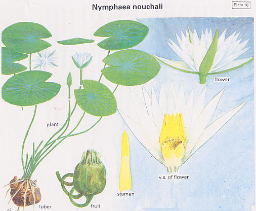

|
ECONOMICALLY
IMPORTANT PLANTS OF INDIA |
| Under-utilized Food and Fodder species and their wild relatives | Contributed by Ms.M.L Annapurna And Dr. Dhanapal, UAS, Bangalore |
Nymphea nouchali 
Taxonomic Details
----- Correct Name
----- Classification
----- Synonyms
----- Common Names
Other Biological Details
----- Habit and Habitat
----- Diagnostic Features
----- Reproductive Biology
---------- Breeding System
---------- Phenology
---------- Pollinators
---------- Seed Biology
----- Major Pests and Diseases
Economic Potential and Uses
----- Parts Used
-----Uses
----- Harvesting Practices
----- Produce and Products
----- Chemistry
----- Processing Techniques
----- Other uses
----- Economic Potential to the Country
----- Export Potential
Miscellaneous Information
Literature
DIAGNOSTIC FEATURES
It is a clump forming perennial with thick, black, spongy, tuberous
rhizomes anchored in the pond mud by spreading roots. The water lily does not
have true stems, the leaves are on long petioles (leaf stalks) that arise directly
from the rhizome. The leaves are large and flat, rounded or oval in shape with
notched margins, up to 40 cm in diameter, and cleft almost to the centre where
the petiole is attached. They are relatively short lived and are replaced regularly
throughout the growing season. They start out as a soft shiny green at the centre
of the plant. As they age, the petiole lengthens, pushing the leaf towards the
outer perimeter making room for the new growth, and they develop light brown
or purple splashes which eventually cover the leaf, leaving only the veins green.
They then start to die, turning yellow then brown and eventually disappearing
under the water. One plant can spread over an area of about 1 m..
The leaves show many interesting adaptations to their watery environment. The margins are slightly rolled inwards toward the uppermost side (involute) which helps keep the blades afloat. The underside of the leaf, which is continually wet, has a strong attraction to the water and this holds the leaf flat against the water. The veins act like a structural support for the leaves. The upper leaf surface is coated with a smooth waxy cuticle, which gives it the appearance of being leathery and shiny. This water-repellent waxy layer is of vital importance to the plant, not only to help prevent the leaf from sinking, but also to prevent the tiny stomatal pores, through which it breathes, from becoming clogged with dust. When water splashes onto the leaf surface, it forms rounded droplets that roll across the surface cleaning up the dust as they go. Clean dust free leaves are also better able to photosynthesize effectively.
REPRODUCTIVE BIOLOGY
Flowers solitary, variable colour
from deep red to pure white; fruit a oblong berry, 3 cm. diameter, ripening
under water.
Breeding System
:
Phenology :
The flowering occurs throughout the year.
Pollinators:
Seed Biology :
Seedling Germination :
Cultivation:
It can be propogated both by seeds as well as vegetative
means.
MAJOR PESTS & DISEASES
Pests:
Diseases:
Parts used
Rhizomes, Flowering , Stalks and Unripe fruits.
Harvesting Practices
Water lilies
are simple to grow, all they need is full sun, some good soil and at least 30
cm of still water. Full sun is necessary for the plants to grow vigorously and
produce flowers as well as for the flowers to open during the day. They do not
like to be in a pond with a fountain or in swiftly moving water, neither do
they like wind.